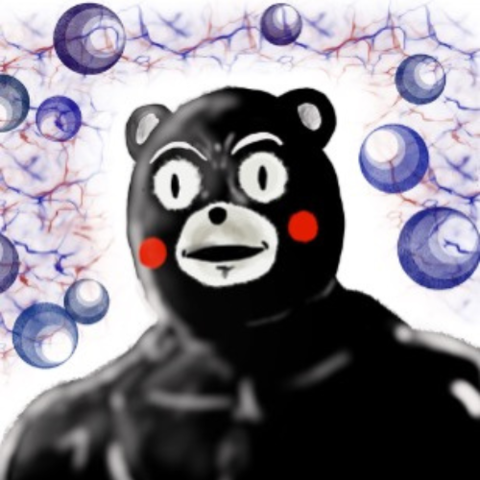

<%@ page language="java" contentType="text/html; charset=UTF-8"
    pageEncoding="UTF-8"%>
<!DOCTYPE html>
<html>
<head>
    <link rel="stylesheet" href="css/common.css">
    <link rel="stylesheet" href="css/chatmodal.css">
    <meta charset="UTF-8">
    <title>チャットモーダル</title>
</head>
<body>

<!-- モーダルを開くボタン -->
<button id="openModalBtn" class="btn" onclick="connect()">レビュー</button>

<!-- モーダル -->
<div id="modal1" class="modal">
  <div class="modal-content">
    <span class="close" onclick="closeModal('modal1')">&times;</span>
      <body onload="connect()">
        <div class="user-info">
            
            <span class="chat-name">樋口 さん</span>
        </div>      
        <div id="chat-container">
          <div id="messages" class="messages"></div>
            <div class="input-area">
                <button class="button0" id="button0">
                    
                    <input type="file" name="upload" id="file-button" accept="image/*" onchange="previewImage(event)">
                </button>
              <input type="text" id="message" placeholder="メッセージを入力(500字以内)" onkeydown="if(event.key === 'Enter') sendMessage()">
              <button  class="chat-submit" onclick="sendMessage()">送信</button>
            </div>
          </div>
        </body>
      </div>
    </div>
<script>
    // モーダルを開くボタンを取得
    var openModalBtn = document.getElementById("openModalBtn");

    // モーダルを開く関数
    openModalBtn.onclick = function() {
        openModal('modal1');
    }

    // モーダルを開く関数
    function openModal(modalId) {
        var modal = document.getElementById(modalId);
        modal.style.display = "block";
    }

    // モーダルを閉じる関数
    function closeModal(modalId) {
        var modal = document.getElementById(modalId);
        modal.style.display = "none";
    }

    // モーダルの外側がクリックされたときに閉じる処理
    window.onclick = function(event) {
        var modal1 = document.getElementById('modal1');
        var modal2 = document.getElementById('modal2');
        if (event.target == modal1) {
            closeModal('modal1');
        }
    }

    //画像アップロードボタンが押されたときに行われる処理
    document.getElementById("button0").addEventListener("click", () => {
    document.getElementById("file-button").click();
    });

    // ファイル選択時に呼び出される関数
    function previewImage(event) {
        // 選択されたファイルを取得
        var selectedFile = event.target.files[0];
        // ファイルが選択されている場合
        if (selectedFile) {
            // FileReaderオブジェクトを作成
            var reader = new FileReader();
            // ファイルの読み込みが完了した時の処理を定義
            reader.onload = function(event) {
                // プレビュー画像のsrc属性に選択されたファイルの内容を設定
                document.getElementById('preview').src = event.target.result;
            };
            // ファイルの読み込みを実行
            reader.readAsDataURL(selectedFile);
        } else {
            // ファイルが選択されていない場合は元のアイコンを表示
            document.getElementById('preview').src = "icon_default.png";
        }
    }

     // 削除ボタンをクリックしたときに呼び出される関数
     function deleteItem() {
        // 元のアイコン画像のパスを設定
        document.getElementById('preview').src = "icon_default.png";
        // ファイル選択のinput要素もリセットする場合は次の行を追加
        document.querySelector('input[type="file"]').value = null;

        // ページの再読み込みを防ぐ
        event.preventDefault();
    }

    //メッセージのscript
    var socket;
    var user_id_speaker = "two"; // 送信者のユーザーIDを文字列にする
    var user_id_listener = "one"; // 受信者のユーザーIDを文字列にする

    function connect() {
        // WebSocketを初期化するで
        socket = new WebSocket("ws://" + window.location.host + "/A2/chatModel");

        // 接続が開いたときの処理やで
        socket.onopen = function() {
            console.log("WebSocket connection opened");
            document.getElementById("messages").innerHTML += "<div class='system-message'>チャットサーバーに接続しました。</div>";
            // ユーザーIDをサーバーに送信するで
            var initMessage = JSON.stringify({ type: 'init', user_id_speaker: user_id_speaker, user_id_listener: user_id_listener });
            socket.send(initMessage);
        };

        // メッセージを受信したときの処理やで
        socket.onmessage = function(event) {
            console.log("Received message: ", event.data);
            var data = event.data.split(" ");
            var createdAt = data.slice(0, 2).join(" ");
            var speaker = data[2];
            var listener = data[3];
            var message = data.slice(4).join(" ");
            var messageClass = (speaker === user_id_speaker) ? "sent-message" : "received-message";
            var messageElement = "<div class='" + messageClass + "'><div class='message-time'>" + createdAt + "</div><div class='message-content'>" + message + "</div></div>";
            document.getElementById("messages").innerHTML += messageElement;
            document.getElementById("messages").scrollTop = document.getElementById("messages").scrollHeight;
        };

        // 接続が閉じたときの処理やで
        socket.onclose = function() {
            console.log("WebSocket connection closed");
            document.getElementById("messages").innerHTML += "<div class='system-message'>チャットサーバーから切断されました。</div>";
        };

        // エラーが発生したときの処理やで
        socket.onerror = function(event) {
            console.error("WebSocket error: ", event);
            document.getElementById("messages").innerHTML += "<div class='system-message'>エラー: " + event.data + "</div>";
        };
    }

    // メッセージを送信する関数やで
    function sendMessage() {
        var message = document.getElementById("message").value;
        var now = new Date();
        var formattedTime = now.getFullYear() + "-" +
                            ('0' + (now.getMonth() + 1)).slice(-2) + "-" +
                            ('0' + now.getDate()).slice(-2) + " " +
                            ('0' + now.getHours()).slice(-2) + ":" +
                            ('0' + now.getMinutes()).slice(-2) + ":" +
                            ('0' + now.getSeconds()).slice(-2);
        // メッセージを送信するで
        var messageToSend = formattedTime + " " + user_id_speaker + " " + user_id_listener + " " + message;
        socket.send(messageToSend);
        document.getElementById("message").value = "";
    }
</script>

</body>
</html>